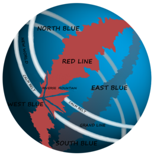

เผ่าของคน

โลกของวันพีซมีมนุษย์และเผ่าพันธุ์อื่นจำนวนมากอาศัยอยู่ เช่น "มนุษย์เงือก" คนแคระ เผ่ามิงค์ (เผ่าพันธุ์สัตว์คล้ายมนุษย์) ชาวเกาะท้องฟ้า และยักษ์ กินอาณาเขตสองมหาสมุทร ซึ่งคั่นด้วยเทือกเขาขนาดยักษ์เรียก เรดไลน์ (赤い土の大陸レッドライン Reddo Rain) ซึ่งเป็นทวีปเดียวในโลก[2] แกรนด์ไลน์ (偉大なる航路グランドライン) ทะเลซึ่งทอดตั้งฉากกับแกรนด์ไลน์ แบ่งมหาสมุทรออกเป็นสี่ทะเล ได้แก่ นอร์ทบลู (北の海ノースブルー) อีสบลู (東の海イーストブルー) เวสต์บลู (西の海ウェストブルー) และเซาท์บลู (南の海サウスブルー)[3] มีทะเลสองสายล้อมรอบแกรนด์ไลน์ เรียก คามเบลท์ (凪の帯カームベルト) คล้ายกับละติจูดม้า ซึ่งแทบไม่มีลมหรือกระแสน้ำมหาสมุทร และเป็นที่เพาะพันธุ์สัตว์ทะเลขนาดใหญ่มาก เรียก จ้าวทะเล (海王類 kaiōrui) ด้วยเหตุนี้ คามเบลท์จึงเป็นปราการอย่างดีแก่ผู้ที่พยายามเข้าแกรนด์ไลน์[4] ทว่า เรือกองทัพเรือ สมาชิกองค์การระหว่างรัฐบาลที่เรียก รัฐบาลโลก สามารถใช้หินไคโร (海楼石 kairōseki) เพื่ออำพรางตนจากเจ้าทะเลและสามารถผ่านคามเบลท์ได้ เรืออื่นถูกบีบให้ใช้เส้นทางอันตรายกว่า ผ่านภูเขาที่แยกแรกของแกรนด์ไลน์กับเรดไลน์ เป็นระบบคลองที่เรียก รีเวิร์สเมาน์เท็น (リヴァース・マウンテン Rivāsu Maunten)[5] น้ำทะเลจากมหาสมุทรทั้งสี่ไหลขึ้นภูเขานั้นและรวมกันบนยอดไหลลงมาเป็นคลองที่ห้าเข้าสู่ครึ่งแรกของแกรนด์ไลน์[6] ครึ่งหลังของแกรนด์ไลน์ซึ่งอยู่เลยแยกสองกับเรดไลน์ เรียกว่า โลกใหม่ (新世界 Shin Sekai)[7]